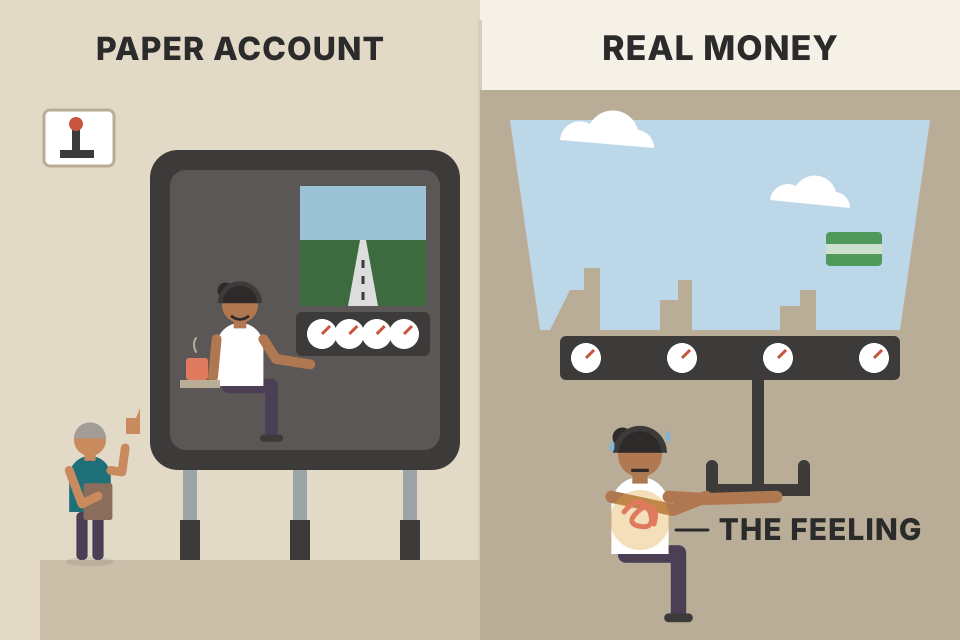
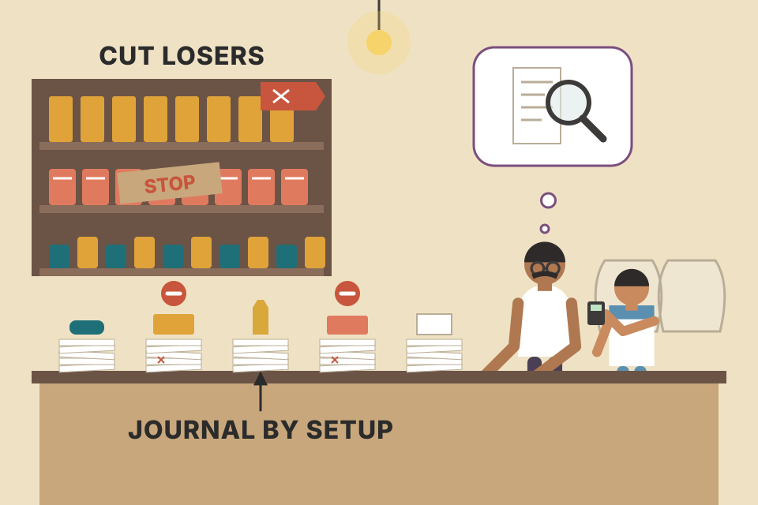
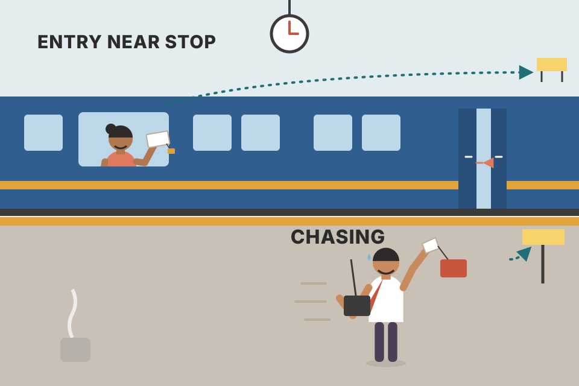
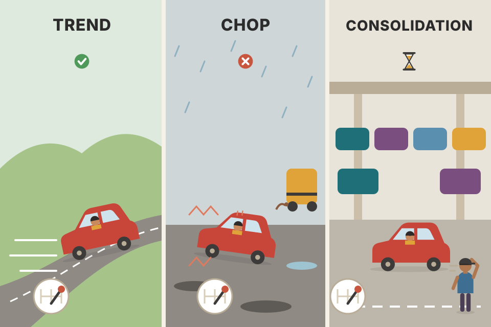

This chapter has no setup and no chart. It is the story of how a sixth-grade teacher with a newborn and $800 became a full-time trader in about five years, told by Danielle Shay Gum herself. She lost money, then broke even, then made money, and she says what changed at each step. This page follows her story in order and turns each lesson into something you can test: option payoffs, losing streaks, beginner's luck, drawdown maths, a trading-journal simulator, Fibonacci targets, index alignment, market types and her nine rules. All charts use simulated prices and simulated traders. They show how each idea works. They are not evidence that it works.
The chapter is a timeline. Read it as three stages, which is how John Carter describes every trader's path (pdf p158): first you lose money, then you learn to stop losing, then you start making money. Danielle's dates show where each stage started and what moved her to the next one.
What took her from one stage to the next, in her own account: Fibonacci targets (when to take profit and where to stop out), a view of the whole market before trading one stock, and a trading plan plus a journal. Each of those has its own plate below, with something you can try.
This is one success story, picked by the author of the book. Many people follow a similar path and never reach stage 3. Your own note trader_returns_reality.md says SEBI found 87.7% of Indian F&O traders lost money in FY26. Take her process as the lesson (risk first, a plan, a journal, a market view). Don't take her outcome as the likely one.
Carter's note. Danielle kept turning up at Carter's live events. After the usual overwhelming learning curve she started asking sharp and sometimes awkward questions. He describes her as smart, funny, very analytical, outspoken and extremely persistent. At one event he asked why she didn't move to Austin and work for them, helping newer traders get up to speed. She took that and ran with it without waiting for anyone's permission.
Her start. In college she would have laughed at the idea of a career in markets. Today she makes money her own way and teaches others to do it. She grew up wanting to be a lawyer and studied language and writing. She thought about human-rights law, starting a business, inventing. She kept losing interest and moving on to the next big idea, because she would only settle for something that made her feel truly alive. In college she taught English as a second language to refugees. After college she went abroad and taught sixth grade (English, Maths and Science) in a small beach town in Central America. What she loved most was turning big ideas into pieces children could understand. She also says she would have hated corporate life: the rules, the hours and the dress codes.
The break. She spent three years building a life in Costa Rica: a job she loved, a house, a fiancé, then a pregnancy. Early in the pregnancy she found that the life she had been promised wasn't the one happening, with nothing to suggest it would change. She chose to leave rather than stay stuck. Her line here is that one decision can put you on a completely different life path. Leaving meant losing her job and almost all her possessions. She came back to her parents with two suitcases and $800 in total across her checking and savings accounts (money saved for the wedding). In two months she went from a planned life to, as she puts it, the black sheep of the family: a 25-year-old single mother living at home. She had gone to one of the most respected universities in her state and couldn't understand how she ended up there. Her lesson: some of the worst events can grow into some of the best outcomes.
Her options were thin. A US elementary-school teacher's pay could not cover childcare and all the costs of an infant. In September 2013 her son Leo was born. He gave her a drive she had never felt. She did not want to raise him living paycheck to paycheck and would do whatever work it took to get free of money worries. When she cried to her father that she would never get out of this, he said he had an answer for her: John Carter.
Her old job was taking a big subject apart so a child could follow it. Learning to trade turned out to be the same job, done on herself: break a huge, confusing subject into small steps you can actually do. Later it became her paid job at Carter's company.
Look at her starting position as a trader would: almost no capital ($800), no income and a strong need for money. That mix is dangerous. Pressure to make money fast pushes people to bet too big, and too-big bets are how small accounts blow up. Keep this in mind for sections 08 and 09. Her rescue was learning on paper first and putting risk before profit (section 18).
Her father had invested and traded for more than 20 years, but they had never talked about it. He introduced her to options trading. She didn't know what an options contract was. Even "bullish" and "bearish" meant nothing to her. He told her that in all his years trading options he had never seen anyone grow money like John could, that John was a teacher, and that they could take his classes together. She could learn to support herself and Leo from home without leaving her son. She was deeply sceptical.
So she worked through her options (try the tree below). She hated maths, had dodged maths classes in college, and her Economy 101 grade was her worst in four years. Her father kept at it: he was taking one of John's classes that weekend, so she should just sit and watch. She sat with her newborn in her arms, understood maybe 10 percent of what John said, and didn't know what was on his charts or how to use a trading platform. John's charisma as a teacher and her father's insistence made her give it a try. She asked herself what she had to lose, and opened a paper trading account (a practice account with virtual money) with TD Ameritrade.

A paper account is a flight simulator. You learn the controls, the checklists and what the instruments mean without risking the plane. What it can't give you is the feeling in your stomach when the plane is real. Danielle found that out when she switched to real money (sections 07–09).
The section opens with a line credited to Ben Franklin: the harder you work, the luckier you get. Five years on, Danielle is one of the main technical analysts, traders and content creators at Carter's company, Simpler Trading. In the Live Trading Chatroom she shares her analysis together with trades she is placing in her own accounts. Her episodes are called "Trading it Simpler" and focus on directional strategies for small accounts. Her main job is working with new traders and breaking ideas down the way she once needed. She also teaches a weekly after-hours webinar series, "What Just Happened", so new members can learn, understand and above all apply the company's strategies. She writes blogs on market analysis and on trade and strategy breakdowns. Her focus is new and intermediate traders.
Like John, she loves a strong mix of technical patterns where she can use leverage for aggressive account growth. Her plan mixes options and futures strategies learned from different people on the team. John was her first mentor. Then she studied Henry Gambell and Carolyn Boroden, and she tested, tested and tested again until the strategies worked for her. Helping traders through that same process is her goal.
A recipe from a famous chef rarely works first time in your own kitchen. You cook it, taste it, write down what went wrong, change one thing and cook it again. After enough rounds it's your recipe, fitted to your oven (a small account, a calmer temperament).
"Leverage for aggressive growth" with "a small account" is the central tension of her whole style. Options give leverage: a small premium controls 100 shares. That's why each trade's size has to be decided by the risk (the most you can lose), not by the hope. Her rules in section 17 exist to handle exactly that tension.
Who is she as a trader? A mix of five years of study under John and the Simpler Trading team. From John she took the directional, top-down approach: start with the overall index markets, then the sectors, to find the highest-probability directional trades. She added Carolyn's Fibonacci analysis and Henry's technical methods to make it work for a small account. The result, she says, is a risk-averse style she can call her own, something she wouldn't have believed possible five years earlier.
She is grateful above all to her father for getting her started. Trading lets her make money on the money she already has, at any time and from anywhere. She calls trading one of the hardest things she has ever tried. Difficulty just makes her push harder. Her motto: if the door won't open, break a window. People ask how she became profitable so quickly. Her answer: she decided to become a trader and did everything she could to make it happen. It wasn't easy, and the biggest single factor was the amount of effort she put in.
A swimmer in a river. The index is the current, the sector is the lane, the stock is the swimmer. A strong swimmer can go upstream, but it's far easier to win a race swimming with the current.
Most stocks share a common factor: the whole market. When the index falls hard, most stocks fall with it whatever their own chart says. Going top-down simply means checking that common factor first, so you don't take a long setup straight into a falling market. Section 15 (Neil Yeager) tests this on simulated data.
Calling herself a "beginner" undersells it. She didn't know what options were. On a chart she couldn't tell the coloured lines apart. But she goes all-in on whatever she does (something she got from her father). Oddly, that's part of why John later hired her: she could clearly remember what had seemed complicated, so she could teach it.
September 2013. She dived in: John's classes and trading-room sessions. At first, listening to several traders was too much. Each had a different style and different words, and it was hard to keep even one straight. She treated it like college: printed all John's slides, took careful notes, asked lots of questions and, most important, asked for help when she needed it. It took her a long time to learn even the basic terms and how to work a platform. She copied John's trades and noted how and why they worked and how much she made or lost. She practised several strategies, but she still couldn't find and place a trade on her own without the chatroom. She kept going because she knew what she wanted: financial freedom. Her father helped with the basic concepts, since John's teaching was advanced and she always needed someone to fill in the blanks. Filling in the blanks for new traders is now her job.
Copying trades is like following a satnav in a new city. You arrive every time, but you never learn the streets. Turn the satnav off and you're lost. That was her "I can't place a trade without the chatroom" stage.
A copied trade gives you the result without the reasoning, so the feedback teaches you little. You can't tell whether a loss came from a bad setup, bad timing, the market, or just chance. Her later fix (section 10) was a journal that records her own reasons, so each loss can be put in a category and that category removed.
Slowly she understood the ideas behind the different options strategies and trade setups. It amazed her that a particular chart pattern could mean a particular event was highly likely. She hadn't known you could "read" a market, but that's what John was teaching: how to read price action. She used the tools recommended in his classes and wrote out how each one worked. Reading price action felt like learning a very strange new language. As she improved, she saw similar patterns come up again and again, and she would know (her word: probably) what to do.
After about a year and a half she felt she finally got it. Only then did she stop paper trading and start trading real money. Her journey, she says, was only beginning.
Suppose a setup truly wins 55% of the time. That's a real edge. Here's what 50 trades of it can look like, and how long the worst losing run tends to be. Green = win, red = loss, outlined = this sample's longest losing run. The chart pools 4,000 simulated runs.
A weather forecast of "70% chance of rain" isn't wrong on a dry day. It's wrong only if, over many such days, it rains far more or far less than 70% of the time. A chart pattern works the same way: you only see its edge over many trades, never in one.
The chance of k losses in a row starting at any given trade is (1 − p)k. Over n trades you get about n chances to start a streak, so long runs become almost certain. A rough rule: the longest losing run ≈ log(n·p) ÷ log(1 ÷ (1 − p)). At p = 55% and 50 trades that's about 4. Slide to 200 trades and it grows to about 6, with the edge unchanged. A losing streak alone doesn't prove the setup broke. This matters for her "dark winter" (section 08).
Two years into her trading career she was struggling. By then she had traded real money for only about six months. The first few months went great: she made money left and right. It didn't last, but those early wins kept her fighting spirit alive. She had studied and paper traded for a year and a half, saving her cash until she felt sure she wouldn't lose it. Her comment: you can never be sure of anything.
Her main strategy for her first several years was credit spreads. She liked that she could control risk: the width of the spread was all she could lose. Only now and then did she buy plain calls and puts, which she saw as riskier. Then one July afternoon she watched Henry place orders in the Simpler Options Chatroom. He was buying calls at about $4.00 per contract (she can't remember the company). Within a day or two her call had doubled: the $400 she put in became $800 almost overnight. She was 26, working 9–10-hour days for $12 an hour doing contract photography, away from her son (the book says he was nine months old). With options she had made money while she slept. She cashed out and bought a new iPhone so she could trade on the go.
Those first two months of real money were wild; she thought she'd be rich overnight. Following John's and Henry's trades she made about 5% of her account in both July and August 2015. At the end of August John began talking about shorting the indexes. She still couldn't spot setups herself. She understood about 70 percent of what the traders said and could copy their orders, and her only opinion was to follow John and Henry. So, on John's suggestion, she bought SPY puts right before the "flash crash" of August 24 and 25, 2015. She doesn't know if John knew a crash was coming. He loaded up on puts because of the market internals, and he kept mentioning the VIX and the SKEW, which meant nothing to her then. Her birthday is August 25. That one trade paid for her own laptop. Before it she gave trading maybe 20 hours a week. After it she was hooked and set out to master it. Looking back, she compares those months to the beginner's luck gamblers get in Las Vegas.
A credit spread is like selling insurance with a reinsurance policy behind it. You collect a small premium up front and hope nothing happens. If disaster strikes, the policy you bought caps your loss. A long call is a lottery ticket with good odds: the most you can lose is the ticket price, but the payout can be many times that.
One US equity option contract covers 100 shares, so a quote of $4.00 costs $4.00 × 100 = $400. That's how Henry's "$4 call" became her $400 trade. When the quote reached $8.00, the contract was worth $800: +100%. A stock would need to rise much further to double. On a $100 stock, +100% means going to $200. That gap is the leverage she loved, and it cuts both ways: if the stock stays under the strike, the call expires worth $0.
One precise point (not in the book): a credit spread's worst case is the width minus the credit, not the full width. Selling the 100/95 put spread for $1.50 risks (5.00 − 1.50) × 100 = $350 to make at most $150. She was right that the loss is capped. The trade-off is that the cap on gains is tight too.
+5% in July then +5% in August compounds to 1.05 × 1.05 − 1 = +10.25% over two months. Kept up for a year, 5% a month would be 1.0512 − 1 ≈ +80%. Hardly anyone keeps that up, which is why the next section asks how much of a good start is luck.
She'd like to say her first two months turned her into a pro. They didn't. Between the 2015 flash crash and the present there was far more struggle than she had expected. Not long after her summer of winners came a dark winter of losers.
In November 2015 she met John and his team at an event in Las Vegas. Until then they had seemed like superstars behind a microphone, and full-time professional trading seemed out of reach. She was more than intimidated. People ask when her thinking changed from "I sort of want to trade, but I'm losing and don't know if I can make it" to "this is what I'll do for a living." Part of it was that her paycheck looked like scraps next to her trading wins (the iPhone, the laptop). What really did it was meeting the team and seeing they were ordinary people who had made this their career. She decided to go all in and never give up.
Simulate 2,000 traders who have no edge at all (each trade wins 1.5R or loses 1R, with odds set so the average is the edge you choose). Each risks a fixed share of the account per trade. How many get a "Danielle summer" of +5% or more in each of their first two months, just by luck? And where are those lucky starters after six months?
Toss a coin 16 times. Getting 11 heads doesn't make you a skilled tosser. With enough people tossing, some will always get a great streak. In trading those people tend to raise their size just when the luck runs out.
Sixteen trades (two months × 8) is a tiny sample. With R outcomes of +1.5 or −1 and no edge, the spread of one month's result is roughly risk × √(trades) × 1.2R, so about 2% × √8 × 1.2 ≈ 7% at the default settings. A +5% month is well within that noise. Set the edge to 0 and a few traders in every hundred get the lucky summer (more if they risk more per trade). Their luck doesn't carry forward: in months 3–6 they average about the same as everyone else (roughly zero, give or take the noise of a small group; roll a few markets to see it bounce around). A head start isn't an edge. Danielle survived her winter because she didn't scale up recklessly: she later says she never came close to blowing out her account (section 18).
Meeting the team didn't fix things. Between September 2015 and January 2016 she lost or spent about 35% of her account and was distraught. In December she saw the next live event was in January. She learns best face to face, asking every question she has. She couldn't afford it after that run of losses, but she told herself it was her Hail Mary: one last try before she would quit, keep what was left and find another career. She went to Austin, Texas, in January 2016.
Until then she had studied only John's and Henry's work. She had their options strategies and setups mostly down, but she kept losing and couldn't stop the bleeding. Looking back it's obvious why: no trading plan, no trading journal, and she followed random trades from the trading room without understanding the hows and whys. She needed a kick and a big dose of discipline. Now, when traders who are struggling come to her, she knows exactly what to ask them.
At the bar at that January event she poured her heart out to Carolyn Boroden, including that she'd run up credit-card debt to be there. Carolyn told her that what she needed was Carolyn's own work: it would help her find and build her own trades, with specific entry and exit points she could identify herself. It sounded crazy. She couldn't even tell which movement counted as a swing, let alone measure one. How would she combine it with John's squeeze setups? Carolyn moved so fast. Her choices: give up and call two years a failure, start over in a different career, or try the Fibonacci approach. Fibonacci won. She bought Carolyn's book and studied it. It was a turning point: she began to understand the waves the market moves in and how to read and analyse a chart. After adding Fibonacci she stopped losing money regularly. Within months she went from consistently losing to consistently breaking even, which was both enlightening and frustrating. Now what?
Around then she added overall futures index analysis, mostly from the team's futures day-trading analyst, Neil Yeager. It showed her why many of her trades had failed: she hadn't looked at market conditions before her options trades. For a long time she had ignored, even tuned out, John and Henry's analysis of the S&P 500, Nasdaq and Dow futures. Her thinking was that she couldn't trade futures, and she was trading MSFT, so why should she care about the NQ (Nasdaq-100 futures)? She calls this one of her most embarrassing beginner mistakes and admits it so others can learn. Neil taught her why the index matters, how to read and analyse the S&Ps, and how to trade them. Once she combined that with her options setups, her recipe was almost complete.
John's three stages. To keep her going, John told her every trader passes through the same three phases. Phase one: losing money, which nobody skips. Phase two: learning how to stop the losses. You decide how long the first two phases last, through how hard you work. Phase three is when the profits finally come, and he promised it repays all the pain. So she stayed with it, spending her time in the trading room, learning from people far ahead of her.
A bucket with three holes: no plan, no journal, no idea which way the river (the index) flows. Pouring in more effort just runs out the bottom. Fibonacci plugged the first hole (where to get out), the index view plugged the second (which way to trade), and the plan and journal plugged the third (section 10).
Losses and gains aren't symmetric. After losing a fraction d, you need a gain of d ÷ (1 − d) to get back: 35% down needs +53.8% back. Her −35% mixed trading losses and spending, so the trading-only hole was smaller. But the maths is why "stop the bleeding first" (stage 2) has to come before "make money" (stage 3). The three-stage chart uses an edge of −0.3R, then 0R, then +0.3R per trade (made-up values). Notice that stage 2 still wobbles: break-even isn't flat, it's random noise around zero.
She calls this a tiny piece of advice that is critical, yet only a small blip on her path. Every losing trader wants one magic answer. Usually there isn't one, but she can say what changed her into a winner.
First, overall discipline. Most of it came from three things: learning Fibonacci, creating a trading plan, and keeping a trading journal. John talked about a plan and journal in every class. She never made one because it looked like too much work. Only in the depths of despair, when she thought she'd have to quit, did she sit down and work on her psychology, her plan and her journal. She wishes she had done it much sooner.
Alongside the journal she focused on chart patterns, on trading the same way every time, on narrowing her focus and on finding out what she was good at. The journal let her narrow her focus and find the reasons she was losing, so she could work to remove them. You'll never remove every losing trade, but if you can cut out a share of them, you've shifted the edge in your favour. Looking at the red in her records, she did two things in order: first make each loser smaller (in percentage terms), then eliminate some of the losers altogether, so the winners outpace the losers. She can't see how she could have done that without a journal.
Expectancy per trade: E = (win rate × average win) − (loss rate × average loss), in R (R = the amount risked).
Neither step needed a better entry signal. Both came from reading her own records. (Numbers are illustrative, not hers.)
160 simulated trades, each tagged with why it was taken. The four tags and their win rates and payoffs are invented to show the method. Your real journal will find your own. Tick the boxes to make her two changes and watch the equity curve and the journal table update.
| Journal tag | trades | win % | avg win | avg loss | E per trade | total |
|---|

A shop losing money. You don't need a better product first. You need the till receipts, sorted by product. Then you see that two lines lose money on every sale. Mark down their price of failure (smaller losses), then stop stocking them (fewer losses).
The overall edge is a weighted average of each tag's edge. A losing tag drags it down in proportion to how often you take it. Capping losses at −1R mostly helps the tags with no stop of their own (copied trades). Dropping tags helps only if those tags have negative expectancy, which you can only see with enough journal entries per tag. Note the honest catch: with 30–50 trades per tag, the sample numbers wobble. Roll a new market and watch the table change. A tag needs many trades before you trust its number.
The section opens with a line from Steven Pressfield's Turning Pro. In paraphrase: the amateur thinks everything must be lined up before she can succeed; the professional knows better and keeps going. From January 2016 to now has been her biggest period of growth. Suddenly she just got it. There is no single secret on the road from struggle to consistency. It's a combination of insights that you put together into your own plan. She learned that the hard way. Her advice: it's fine to start by failing, as long as you fail forward. That's how she came to combine her favourite insights from her favourite mentors and pass them on. The next five plates are her lessons from each mentor.
A band. John wrote the songs (the setups), Henry taught her to play them the same way every night (the method), Carolyn showed her when the song ends (targets), Neil made her listen to the rest of the band (the index), and Raghee taught her to read the room (the market type).
Each mentor fixes a different failure. Setups decide when to look. Method decides how to enter and exit the same way every time. Targets decide where to get out. The index and the market type decide whether to trade at all. One mentor alone left her with gaps, and each gap was a separate source of losses in her journal.
The lesson she puts at the top, credited to John, in paraphrase: you don't need to know everything about markets to make money; you need one high-probability setup that works. She finds it hard to pick a single lesson from him. The closest is the effect of his mindset. At first it was all overwhelming, and most people think you must be a financial master to trade options. John said over and over that the key is to understand the game and keep working to tilt the odds your way. Trading is a skill. The person who knows the most isn't the one who wins. That gave a former teacher the confidence that she could learn it.
John created the squeeze and is, in her words, a master of directionally aggressive options trading. She learned most of her strategies from him. The base of her plan is a collection of setups he taught in classes over five years. Her favourites, which form the whole basis of her trading: the Squeeze, the Nested Squeeze, the Pop Squeeze and the Triple Squeeze. As a directional trader her goal is to find the strongest, high-probability moments when the market is about to move, and jump on them where she has an edge. These setups do that. John trades them more aggressively than she could. She combined them with other mentors' advice into her own style, risking less capital on more boring stocks: John's exact setups on slower-moving stocks than he would usually trade. For her that was the perfect mix.
Without his encouragement on air, his constant talk about breaking through trading's psychological barriers, his specific setups and his shared wisdom, she is sure she wouldn't be where she is. She wonders how she would trade, or whether she would trade at all, with a different mentor. Options first interested her because John made them seem possible for anyone, and she loved the aggressive growth and the excitement, which he gives off and she caught.
Carter's own image (Ch.11): when his young children suddenly go quiet, something is about to happen. Shaded zones are the quiet. Triangles mark where the quiet broke and which way momentum pointed.
Same setup, different stock: the rules are identical, only the size of a normal day changes. A slower stock has a smaller ATR, so a sensible stop sits fewer dollars away. With the same dollar risk you can hold the position calmly, and option premiums on it are cheaper. The cost is that the payoff move is smaller too. Switch the selector and compare the stop in dollars and the shares a $100 risk buys. (Simulated stocks; the 2 × ATR stop is Carter's fallback rule from Ch.11 pdf p250, used here for illustration.)
John was her first and main mentor. Henry is second. As John's protégé, Henry went through the same steps she did, turning John's wisdom into something of his own. He is a methodical technical analyst who mixes directional trading with heavy use of Fibonacci, which suited her strongly. He is much more conservative than John. His tips for limiting losses and staying in trades have been key for her. He taught her to time entries and exits to limit risk, which matters most in a small account.
The strict, technical side of her trading comes from Henry. Every morning she listened to him repeat the same rules and setups, day after day, with clear rules and a cautious eye. That taught her the step-by-step procedures she uses now. John has amazing intuition, but as a beginner she often couldn't work out what she should do from his intuition-based moves. Henry kept breaking the setups, entries and exits down, and followed through with discipline and explanations that made sense to her. He is also a "Zen master": calm in any market. Staying calm has always been hard for her, and his patience has helped her a great deal. From John she learned setups and strategies. Henry taught her to apply them in a way she could repeat and make money from.
Swing low at $48.10, so the stop goes at $48. Target (say a Fibonacci extension) at $56. Account $10,000. Slide the entry: you can buy the pullback near the stop, or chase after the move has run.

Buying a train ticket. Book early (near the stop) and the trip is cheap: little to lose, the whole ride ahead. Buy on the platform as the doors close (chasing) and you pay full price for a short ride.
Position size = dollar risk ÷ (entry − stop). Reward ÷ risk = (target − entry) ÷ (entry − stop). Moving the entry up by one dollar adds a dollar to the risk and removes a dollar from the reward, so the ratio falls fast. At $50 you risk $2 to make $6 (3 : 1) and can hold 50 shares on a $100 risk. At $53 you risk $5 to make $3 (0.6 : 1) and can hold only 20 shares. Timing the entry is the cheapest risk control there is: the setup didn't change, only the price.
One of the most frustrating parts of her journey was deciding when and where to take profits and cut losses. It took her two years to bring Fibonacci price analysis into her work, and she tries to shorten that learning curve for anyone who'll listen. She has always struggled to control her emotions, and still does at times. Fibonacci analysis lets her take profits and cut losses in a methodical way that gets results. Carolyn's saying became a key part of her plan:
"Moves tend to terminate at extensions of prior swings." (Carolyn Boroden, quoted on pdf p161)
She thanks Henry and Carolyn for pushing her towards Fibonacci. It's still one of the most important parts of her work: she can't trade a chart without running the levels first. Many of her failed long setups were simply moves that were already extended. Some profits turned into losses because she ignored the extension targets. Learning to draw symmetry and recognise a market's personality has been key to her success.
A ball bouncing down a staircase. Each bounce is a bit like the last, so once you've seen one step, you can guess roughly where the next lands. Fibonacci ratios are the step sizes traders agree to measure with. Because so many people watch the same levels, those levels attract orders.
The swing up A→B gives a size. The pullback B→C gives a second size. Extensions answer "if price goes back up through B, how far is a normal overshoot?" (1.272 and 1.618 of B→C, measured from C). Projections answer "if the next leg up matches the first one, where does it end?" (100% and 161.8% of A→B, added to C). Choose the 0.618 pullback and the 1.618 extension lands exactly on the 100% projection: a confluence, which is why the 0.618/1.618 pairing comes up so often.
Now the honest part (not in the book). Tick the box: the simulated path has no idea Fibonacci exists. If price were a coin-flip walk, the chance of reaching a target before the stop is just (entry − stop) ÷ (target − stop). The readout shows that base rate. Fibonacci levels earn their place by beating it in a real journal. Even without an edge, they give you two things she needed: a pre-set exit (so emotion doesn't choose it), and a warning that a long entered above the extension has little room left.
Neil taught her to read the futures indexes, which she calls reading the market's personality. As a young options trader she didn't think that mattered. She was very wrong. Once she followed his methods and aligned her swing options setups with what the overall market was doing, her trading improved enormously. Neil also taught her to trade futures, another tool in her toolbox, especially on volatile days or when she needs a hedge. Today she loves day trading futures with a combined setup built from what she learned from John, Neil and Carolyn, turned into something of her own.
Beyond the market view, his trend-following approach sharpened her swing options trades. His strict technical analysis, especially his candlestick patterns and market observations, helped her perfect her swing trades. He is methodical and risk-averse, works hard to find his edge, and passes on anything outside his risk tolerance. She calls that a very important skill for a growing trader.
A simulated index moves in 70-day regimes (up, down or flat). A simulated stock follows it with beta 1.2 plus its own noise. Every time the stock closes at a new 20-day high, we "buy" and hold for 10 days. Triangles = the index was above its moving average (aligned). Red dots = it wasn't. The readout pools 150 simulated markets.
Her MSFT-versus-NQ mistake. Microsoft is a big part of the Nasdaq-100. Buying MSFT calls while the NQ is breaking down is like rowing a boat upstream while ignoring the river's current.
The stock's return = beta × the index's return + its own part. A stock breakout during a falling index is often just noise in the stock's own part fighting a strong common current. In this simulation index trends persist by design (the generator holds each regime for 70 days), so the filter has to help here. That shows the mechanism, not proof. On real data your own test is the better evidence (see below).
A hedge with index futures sells enough index exposure to cancel the portfolio's market risk: hedge value = portfolio value × beta. A ₹10,00,000 stock portfolio with beta 1.2 needs about ₹12,00,000 of Nifty futures sold. Number of lots = ₹12,00,000 ÷ (Nifty level × lot size). Check NSE's current lot size, as it changes. Then the portfolio's result depends mostly on the stocks beating or lagging the index, not on the index itself.
As she moves further into futures, Raghee is the one teaching her to master them. Raghee's work takes a wide, macro view of markets, something Danielle struggled with. Danielle is mainly a technical trader. Raghee is teaching her to keep learning about the global markets as a whole: the wider view.
Raghee's lessons on the difference between trending, "whippy chop" and consolidating markets are a key new part of her plan. As a trend follower she needs to know when a trend is solid, when it has changed, and when there's no trend at all. This has helped both her options swing trades and her intraday futures trades. Her current focus is intraday index futures setups. Her goal is to swing trade a variety of futures contracts with ease, and Raghee is helping her get there.
The market below is built from 50-day blocks of three kinds: trend (steady drift), whippy chop (no drift, big swings, snapping back) and consolidation (no drift, small swings). The background shows the true kind. The lower panel classifies each day from the last 20 days only: Efficiency Ratio above the threshold = trend; otherwise high volatility = chop, low = consolidation. The bars' colour is the guess. The readout pools a 10/30-day moving-average crossover's result by true market type over 60 simulated markets.

Three roads: a motorway (trend: cruise and let it run), a pothole-filled street (whippy chop: every move jolts you back), and a car park (consolidation: barely moving). The same driving style can't work on all three.
Efficiency Ratio = net move ÷ total path over 20 days. A clean trend has ER near 1. Chop and consolidation both have ER near 0; only their volatility differs. A trend follower makes money on the motorway, gets cut to pieces in chop (every crossover arrives just in time to be wrong) and bleeds slowly in consolidation. The classifier is always about 20 days late at a change, because it only sees the past. That's the "when the trend has changed" problem she mentions.
These are her favourite pieces of advice from the traders above: the top changes she made to get to consistent profits. In paraphrase:
The 2% risk cap, the size multipliers by grade (A 1×, B ½×, C ¼×), the 1.5 : 1 minimum and the half-at-+1R scale-out are this page's illustration of rules 4, 2 and 7. The book gives the rules, not these numbers.
Simulate thousands of trades as a random walk in R units (stop at −1R unless shaken out). Plan: hold to the stop or the target. Small profits (rule 5 broken): bank +0.5R. Shaken out (rule 6 broken): bail at −0.4R on a scary wiggle. Set the drift (the real edge of the setup) and a cost per trade.
A taxi meter. If the ride really is heading somewhere (a real edge), the fare grows the longer you stay in. Jumping out after one block (small profits) or at the first pothole (shaken out) ends the ride before the meter has run. If the taxi is driving in circles (no edge), it doesn't matter when you get out. You only pay the flag-fall (costs).
For a random walk with drift μ per step that stops at a target or a stop, the average result is μ × the average number of steps held. This is Wald's identity, a standard result in probability. (In the simulation, exits fill at the first price past the level, so small overshoots count, like slippage.) Set the drift to 0: every exit rule averages zero before costs. An exit rule cannot create an edge, it can only harvest one. With a positive drift, wide exits hold longer, so they harvest more. Small profits and shake-outs cut the holding time, so they cut the harvest, and they pay the cost per trade more often per unit of profit. That's rules 5 and 6 in one line. Rule 7 (scaling out) is a middle path: part of the position banks early, part stays for the full harvest.
Buy 100 shares at $50, stop $48 (1R = $200). Sell 50 at $52 (+1R on half = +$100) and move the stop on the rest to $50. If the rest hits $56: +$300, total +$400 = +2R. If it comes back to $50: $0 on the rest, total +$100 = +0.5R instead of a full −1R loss. Going in, you can scale in the same way: half at the first entry, half if the setup confirms. Being wrong costs less.
These lessons, and many more, took her from beginner, to consistently losing trader, to successful trader who doubled her small account from the previous year's low. She is proud that she has never come close to blowing out her account. On good days and bad (and there were more than a few bad ones), it has always been risk first, profits second. In five years she went from knowing nothing about trading to writing this chapter, with plenty of struggle along the way. She loves teaching the subject every day. As a primary-school teacher she never imagined teaching options and futures trading to hundreds of adults at a time, online, from home. She owes it first to her father, then to the mentors in this chapter, most of all John. She still considers herself a student and keeps learning from the team every day. Later in the book (Ch.20) she shows the strategies she uses day to day. First, the book moves on to the basic setups (Part II) as a foundation, and then shows how she combines them.
The reference point matters. Doubling from a low that sits 35% below the start leaves you 2 × 0.65 = 1.30× the start: +30% overall. The book doesn't give her starting balance or which low she means, so don't read more into it. The point is the habit: when you measure a result, say what it's measured from.
Two drivers on the same road. One drives at a speed that lets them stop for anything. The other is faster and fine on most days. Over five years it's the rare bad day, not the average day, that decides who is still driving.
Each line is the chance that a trader with a fixed edge sees the account fall 50% from a peak within 200 trades. Teal: a real edge (50% wins at +1.5R, losses −1R, so +0.25R a trade). Red: no edge at all. At 1% risk both stay safe for 200 trades, even the no-edge trader. At 2% the real edge is still safe, while the no-edge trader has roughly a 1-in-10 chance of halving. By 5% even the real edge halves the account more than one time in ten. The danger comes from bet size, not just a lack of skill. That's "risk first": it keeps you alive long enough to find out whether your edge is real.
A trading plan, a trading journal, and understanding of the trades she took: she followed random trades from the trading room without the hows and whys (section 09, pdf p157).
She went from consistently losing to consistently breaking even within months. It didn't make her profitable by itself. That came after adding Neil's index analysis, a plan and a journal (sections 09–10, pdf p158).
US equity options cover 100 shares, so $4.00 × 100 = $400. The spread's worst case is (width − credit) × 100 = (5 − 1.5) × 100 = $350, not the full $500 width (section 07).
Lose money, then learn to stop losing, then make money. How long you spend in the first two depends on you and how hard you work (section 09, pdf p158).
First make each loser smaller in percentage terms, then remove some losers altogether, so winners outpace losers (section 10, pdf p159).
A stock's moves are partly the market's moves (beta × index). Long trades in a falling index fight the common current. Neil taught her to align swing setups with the index (sections 09 and 15).
Risk $5 to make $3 is 0.6 : 1, and a $100 risk buys only 20 shares. Rule 2: if the entry is too far from the stop, pass, and don't buy at extensions (sections 13, 17).
The 1.618 extension of B→C and the 100% projection of A→B (C + 1.618 × 0.618 × AB = C + AB). That's a confluence, the kind of cluster Carolyn trades against (section 14, Ch.8 pdf p209).
No. For a random walk stopped at a target or stop, the average result is drift × average holding time (Wald's identity). With zero drift every exit rule averages zero before costs, and frequent small exits pay more costs. Exit rules harvest an edge; they don't create one (section 17).
35 ÷ 65 ≈ +53.8% to recover. Doubling from that low gives 2 × 0.65 = 1.30×, i.e. +30% from the start (sections 09, 18).
Trending, whippy chop, consolidating. A 20-day classifier only sees the past, so it lags any change by up to its window. On real Nifty 200 data your own test found none of ER, ADX, Choppiness, MA slope or BB width predicted the next 10 days' trendiness (section 16).
Squeezes at once on the index, the sector and the stock (Ch.20 pdf p412). The Nested and Pop squeezes are named on pdf p159 but not defined there (section 12).
Yes. With 8 trades a month at 2% risk, one month's spread is about ±7%, so a few no-edge traders in every hundred post +5% twice in a row by luck. She herself calls it beginner's luck. A short record can't separate skill from chance; only many journaled trades can (section 08).
Survivorship: we read the story of someone who made it, chosen by the book's author. Most retail options traders lose (SEBI: about 88% of Indian options traders lost in FY26). Copy the process (risk first, plan, journal, market view), not the expected outcome (map, section 18).